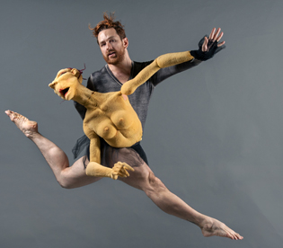

NYTT! Workshop: Partnering the Object, with Duda Paiva (Brazil/Netherlands)
- Kategori:
- Tverrfaglige kurs
Tverrfaglige kurs
Åpent for profesjonelle skuespillere og andre profesjonelle deltakere med spesifisert bakgrunn og erfaring. Se søknadsteksten for spesifikasjoner. Legg ved CV. - Dato:
- 21.10.2015 til 21.10.2015
- Start kl :
- 11:00
- Slutt kl :
- 14:00
- Pris:
- 300,-
- Adresse:
- Norsk Skuespillersenter, Welhavensgate 1, Oslo
{kind=link}
THE PUPPET SCORE: THE BODY OF THE PUPPET AND THE BODY OF THE ACTOR
We have learnt from experience that the knowledge of dancers, theatre makers and puppeteers about the influence of objects on their movement, and vice versa, is often quite limited. In order to let them experience this technique, and experiment with it and apply it, we have developed workshops and masterclasses about dance and object: Partnering the object.
The workshops and masterclasses are based on the technique developed by Duda Paiva: Dividing the beats. Through this technique, the dancer/performer learns to achieve a dramatic and profound connection with an object. Dividing the beats ensures that the dancer/performer is inextricably linked to an object and can move it independently of his own body at the same time. It leads to a unique ‘duet in one spirit’, in which movements are both focused inwardly and projected outwardly.
The next step is to develop choreographic motifs between the object and the dancer/performer. Learning to experience and control the influence of movement, focus and coordination on the lifeless object and on the performer/dancer himself clears the way for his own creative process.
For further reading: http://www.dudapaiva.com/Main/company.html
Sign up here: http://www.skuespillersenter.no/pamelding/
Om Duda Paiva: Duda er fra Brasil, men har fra sin base i Nederland i over 15 år vært en av Europas ledende figurteaterutøvere, spesielt kjent for sine soloforestillinger, hvor han kombinerer nettopp dans og dukker. Dudas forestillinger er virtuose og estetisk vakre, fulle av lun ironi og også provoserende i sin tematikk. I 2012 laget og turnerte han forestillingen Man Beast i samarbeid med Riksteatret og besøkte de større stedene i Norge til svært god mottagelse. I oktober 2015 er han på turne med forestillingen BLIND som er produsert i samarbeid med Figurteatret i Nordland. Se BLIND 20/10 i Lillestrøm og 22/10 på Riksteatret under CODA festivalen. Se turneliste.
{kind=link}
For the participants: The workshop will be in english. We welcome actors, dancers and other theatre makers! Bring training clothes. If you are a puppeteer, bring your own puppet. NB! No string puppet allowed.
Workshopen gjennomføres i samarbeid med Figurteatret i Nordland.
Pris for NSF-medlemmer: 250,-
{kind=link}